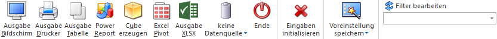

Das Backlog dient als Analysewerkszeug für alle erfassten Belege der WinLine FAKT. Der Aufruf des Backlogs erfolgt hierbei über den Menüpunkt…
1 WinLine FAKT
1 Auswertungen
1 Beleganalyse
1 Backlog
… und bietet die folgenden Sichtweisen:
ü Kunden- / Lieferantenbezogen (siehe Auswertungsmethode "Konten")
ü Artikelbezogen (siehe Auswertungsmethode "Artikel")

Das Fenster "Backlog" untergliedert sich in die folgenden Bereiche, welche in den nachfolgenden Kapiteln detailliert erläutert werden:
ü Register "erweiterte Selektion"
Hinweis
Durch Ausgabe des Backlogs werden folgende Einstellungen benutzerspezifisch gespeichert:
ü Auswertungsmethode
ü Belegstufe
ü Kontenbereich
ü Verkauf / Einkauf
ü Kontensortierung
ü abgeschlossene Belege
ü erledigte Belege
ü stornierte Belege
ü Textzeilen anzeigen
ü Gutschriftszeilen
ü nur Hauptartikel
ü HSL-Komponenten
ü Lagerorte berücksichtigen
ü Fremdwährung
ü Belegstufenübersicht
Buttons

Ø Ausgabe Bildschirm
Mit Hilfe des Buttons "Ausgabe Bildschirm" oder der Taste F5 wird die Auswertung am Bildschirm ausgegeben.
Ø Ausgabe Drucker
Durch Anwahl des Buttons "Ausgabe Drucker" wird die Auswertung am Drucker ausgegeben.
Ø Ausgabe Tabelle
Bei der Anwahl des Buttons "Ausgabe Tabelle" wird das Backlog in Form einer WinLine Tabelle dargestellt (nähere Informationen entnehmen Sie bitte dem Kapitel Backlog Tabelle).
Ø Power Report
Durch Drücken des Buttons "Power Report" wird die Auswertung auf Basis von Cube-Daten grafisch dargestellt. Die Ausgabe ist individuell anpassbar und erfolgt in der Form von "Widgets", die unterschiedlichste Darstellungen ermöglichen.
Ø Cube erzeugen
Bei Anwahl des Buttons "Cube erzeugen" wird das Backlog im "Olap Viewer" angezeigt. In diesem können die Daten nach verschiedenen Gesichtspunkten ausgewertet werden. In der Auswertung selbst werden folgende Zahlenwerte (Fakten) angezeigt:
ü Menge
ü Menge2
ü Wert
ü Rabatt
ü Rohertrag
ü Faktor 1 bis 3 (Bezeichnung gemäß Einstellung in den Belegoptionen)
ü Menge (noch zu liefern) - nur vorhanden bei den Optionen "Auftrag" oder "Belegansicht"
ü Menge2 (noch zu liefern) - nur vorhanden bei den Optionen "Auftrag" oder "Belegansicht"
ü Wert (noch zu liefern) - nur vorhanden bei den Optionen "Auftrag" oder "Belegansicht"
ü Rabatt (noch zu liefern) - nur vorhanden bei den Optionen "Auftrag" oder "Belegansicht"
ü Rohertrag (noch zu liefern) - nur vorhanden bei den Optionen "Auftrag" oder "Belegansicht"
Neben den Fakten gibt es noch die Dimensionen, nach denen die Auswertung "betrachtet" werden kann:
ü Artikelnummer und -bezeichnung
ü Kontonummer und Kontoname der Rechnungsadresse
ü Kontonummer und Kontoname der Lieferadresse
ü Belegstufe
ü Belegstatus
ü Verkauf/Einkauf
ü Hauptartikelnummer
ü Charge-/Identnummer
ü Ausprägung1
ü Ausprägung2
ü Artikelgruppe
ü Artikeluntergruppe
ü Belegdatum
ü Angebotsnummer
ü Auftragsnummer
ü Lieferscheinnummer
ü Rechnungsnummer
ü Vertreter
ü Projekt
ü Fremdwährung
ü Lieferdatum
ü 2. Lieferdatum (Bezeichnung gemäß Belegoptionen)
ü Erlöskonto
ü Kunden-/Lieferantengruppe
ü Kostenstelle
ü Kostenträger
ü Kostenart
ü Colli
ü Belegstufe (erw)
ü Belegtyp
ü Wiedervorlagedatum
ü Lagerort 1 bis 6
ü Belegnummer
ü Laufnummer
Ø Excel Pivot
Durch Anwahl des Buttons "Excel Pivot" werden die selektierten Zeilen in Form einer Pivot Ausgabe in Microsoft Excel (2007 oder höher) angezeigt.
Ø Ausgabe XLSX
Mit Hilfe des Buttons "Ausgabe XLSX" werden die ausgewerteten Zeilen an Microsoft Excel übergeben.
Ø Datenquelle
Mit Hilfe dieser Auswahl kann definiert werden, ob und wie eine Datenquelle (d.h. ein Snapshot oder eine MasterView) verwendet werden soll.
ü Keine Datenquelle
Bei Auswahl
von "keine Datenquelle" wird keine zuvor angelegte Datenquelle genutzt. D.h. die
Daten werden von der WinLine "live" ermittelt und in der gewünschten Form
ausgegeben.
Hinweis
Da die BI-Ausgabe (z.B. Cube oder Power Report) immer eine Datenquelle benötigt, wird im Hintergrund eine temporäre Datenquelle (Snapshot) gebildet.
ü Datenquelle
erstellen/aktualisieren
Die Daten werden zur Laufzeit ermittelt und an einen
zu definierenden Snapshot übergeben. Nach dem Füllen der Datenquelle wird die
gewünschte Ausgabevariante über die Datenquelle erzeugt. Dieser Vorgang kann mit
einer Zeitverzögerung verbunden sein, da die Daten zusätzlich gespeichert werden
müssen.
ü Datenquelle verwenden
Bei der
Verwendung eines Snapshots werden die Daten direkt aus der Datenquelle gelesen,
d.h. die für die Ausgabe benötigten Daten können ohne Verzögerung in der
gewünschten Variante ausgegeben werden.
Wird hingegen eine MasterView
gewählt, so werden die Daten für die Ausgabe "live" ermittelt, wobei diese so
aktuell sind wie die zugrunde liegenden Datenquellen.
Hinweis
Der Button "Datenquelle
verwenden" wird nur angeboten, wenn für diesen Bereich (bezogen auf den
aktuellen Benutzer / Mandanten) zumindest eine private oder öffentliche
Datenquelle existiert.
Soll die Ausgabe nach "Ausgabe Bildschirm" oder
"Ausgabe Drucker" erfolgen, so wird der Ausdruck mit Subformularen
(tabellarischer Andruck von Ausprägungsartikeln) und die Darstellung des
RTF-Textes von Textzeilen nicht unterstützt. Des Weiteren werden
Formularanpassungen, welche auf Variablen des Konten- oder Artikelstamms
beruhen, nicht ausgegeben.
Hinweis
Weitere Informationen zum Thema "Datenquellen" entnehmen Sie bitte dem Kapitel "Die Datenquelle".
Ø Ende
Durch Drücken des Buttons "Ende" bzw. der Taste ESC wird das Fenster geschlossen.
Ø Eingaben initialisieren
Mit Hilfe des Buttons "Eingaben initialisieren" bzw. der Taste F4 werden alle vorgenommenen Selektionen entfernt.
Ø Voreinstellung speichern
Durch Anwahl dieses Buttons erfolgt eine benutzerspezifische Speicherung aller im Fenster getätigten Einstellungen. Diese sogenannten "Voreinstellungen" können jederzeit wieder abgerufen werden und ermöglichen dadurch ein schnelleres und zielorientierteres Arbeiten (nähere Informationen entnehmen Sie bitte dem Kapitel "Die Voreinstellungen").
Ø Filter bearbeiten
Durch Anklicken des Buttons "Filter bearbeiten" kann die Backlogauswertung nach frei definierbaren Kriterien eingeschränkt werden. Des Weiteren kann mittels Filter eine Sortierung definiert werden, wobei diese wie folgt berücksichtigt wird:
ü Konten - Kurzinfo
Es wird keine
Sortierung berücksichtigt.
ü Konten - Belegsummen
Es werden
die Variablen des Belegkopfes (T025) für die Sortierung berücksichtigt.
ü Konten - Einzelzeilen
Es werden
die Variablen des Belegkopfes (T025) für die Sortierung berücksichtigt.
Innerhalb des Beleges werden dann Variablen der Belegzeilen (T026) für die
Sortierung berücksichtigt.
ü Konten - Gesamtsummen
Es wird
keine Sortierung berücksichtigt.
ü Artikel - Gruppen kumuliert
Es
wird keine Sortierung berücksichtigt.
ü Artikel - Gruppen
detailliert
Es wird keine Sortierung berücksichtigt.
ü Artikel - Einzelartikel
Es
werden Variablen der Belegzeilen (T026) für die Sortierung berücksichtigt.
Achtung
Für die technische Durchführung der Auswertung gibt es neben dem Standard (seit Version 10.1) noch 2 weitere Methode, wobei je nach Datenstand (Datenmenge usw.) ggfs. eine schnellere Ausgabe erzieht werden kann. Hierbei ist zu beachten, dass bei Nutzung der Option "Lagerorte berücksichtigen" automatisch mit der Standard-Methode gearbeitet wird.
Zur Umstellung muss der folgende Eintrag in der "mesonic.ini"-Datei (im WinLine-Verzeichnis zu finden) hinterlegt werden:
[Backlog]
SQLMode=x
ü SQLMode=0
Es wird die Ausgabe
nach der Logik der Version 8.x durchgeführt Im Gegensatz zum Standardmodus (seit
Version 10.1) werden die Stammdaten der Artikel vor Erstellung der Auswertung
nicht hinzugeladen. Dadurch ist ein Zugriff auf z.B. Artikel-Eigenschaften via
Filter nicht möglich.
ü SQLMode=1
Bei dieser Methode
wird die Auswertung nach der Logik der Version 7.x durchgeführt (Stammdaten der
Artikel werden ebenfalls vor der Erstellung der Auswertung nicht hinzugeladen)
und unterscheidet sich zu der Methode "SQLMode=0" nur in dem Punkt
Performance.
Hinweis
Erfahrungsgemäß ist die Methode "SQLMode=0" bei Einzelplatzinstallationen oder bei Abfragen auf Felder der Belegmitte (Artikelnummer, Artikelgruppe, usw.) schneller.